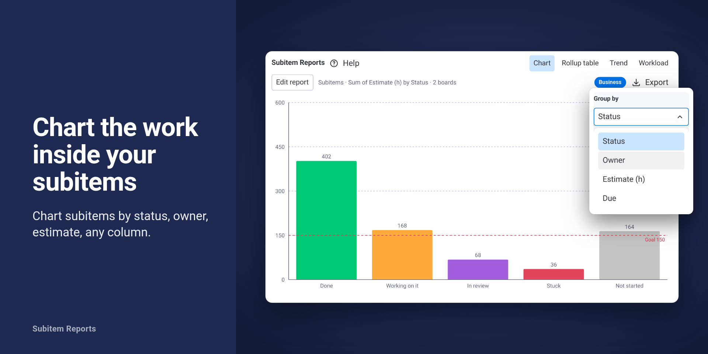

Subitem Reports
Chart, roll up and export subitems on any dashboard. A read-only widget for monday.com dashboards: subitem charts, rollup tables, workload and trends, with CSV, PNG and PDF exports.
Free on one board with every view. Every install starts a 14-day Business trial, no card needed.
Your dashboard charts parent items. The work lives in the subitems.
Agencies, PMOs, production and ops teams keep their real work one level down: clients as items and tasks as subitems, projects as items and deliverables as subitems. Point a dashboard chart at that board and you get a handful of bars for the parents, while the hours, the estimates, the owners and the "Stuck" labels sit in the sixty subitems underneath.
Subitem Reports is a dashboard widget that charts, rolls up and exports subitems (sub-items, subtasks) by status, owner, estimate or any other column, across one or many boards and every subitem level, in the board's own status colors. It is read-only.

What the widget does
Chart. Bar, line, pie or donut. Group by any column; count, sum, average, min, max or % done using your board's own done labels; filter by status; add a goal line; chart items, subitems or both, including multi-level subitems.
Rollup table. One row per parent item with its value, subitem count, status breakdown and a totals row, across every subitem level. On Business, the What changed column shows parents that moved to Done or got stuck and per-parent deltas since your last visit.
Workload. Hours by person per week from subitem dates and estimates. Spot overload before Monday morning.
Trend. History builds itself every time the dashboard is opened; nothing to set up. Free shows the last 30 days; Team and Business show 13 months with change badges against 7 and 30 days ago.
Export. CSV, PNG, or copy the view as an image for Slack and decks (Team). A PDF report with a title, your logo and a "prepared for" line, ready to send to a client (Business).
Read-only. Runs inside monday. Nothing stored outside it.
- Read-only board access. The widget reads the boards you choose and cannot create, change or delete anything on them.
- No external servers. The widget runs in your browser inside monday and talks only to monday's API. Nothing is e-mailed and nothing is sent to anyone else.
- Your data stays in your account. Report settings, trend history and what-changed baselines live in your monday account's app storage, shared with the people in your account who use the widget. You can delete the history from the widget at any time.
- One flat price per account. Every user included, no per-seat fees, billed by monday.com.
Plans
| Free | Team | Business | |
|---|---|---|---|
| Price | $0 | $29/month or $276/year | $79/month or $756/year |
| Boards per report | 1 | 5 | Unlimited |
| Views | Chart, Rollup table, Workload, Trend | Same | Same |
| Trend history | Last 30 days | 13 months, change badges, trend CSV | 13 months, change badges, trend CSV |
| Export | — | CSV, PNG, copy as image | CSV, PNG, copy as image, PDF report |
| What changed | — | — | Included |
| Support | E-mail, reply within 2 business days | E-mail, reply within 2 business days | E-mail, reply within 2 business days |
Prices in USD, one flat price per monday account, every user included, billed by monday.com. When the 14-day Business trial ends the account returns to Free and keeps every saved report, setting and recorded day. Full details on the pricing page.
Who it is for
Teams whose tasks live one level down and who report upward or to clients: agencies, PMOs, production and operations teams, on any monday plan that has dashboards. An account admin installs the app; everyone on the account can use the widget.
Get started
- An account admin installs the app from the monday marketplace.
- On a dashboard, choose Add widget, then Apps, then Subitem Reports.
- Pick boards, pick what to measure, pick a view.
The setup guide walks through every view, the exports and the trend.
Subitem Reports is developed and operated by Luiz Anton Perren (LuixBits), an independent developer based in Switzerland.